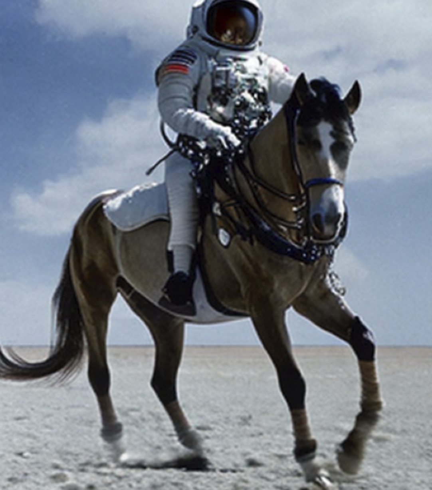

timeline
August 2022 : Stable Diffusion v1.4
: First open-source high-quality model
September 2022 : Stable Diffusion v1.5
: Refined version
October 2022 : eDiff-I (NVIDIA)
: Ensemble approach
November 2022 : Stable Diffusion v2.0/2.1
: Higher resolution (768x768)
Exploring Generative AI Models: Part 2
Simon Guest
Recap of Last Week’s Lecture
- Brief History of the Transformer
- Model evolution, explored text-to-text models
- API access, quantization, running locally
This Week
- Dive into image-based models!
- Explore the Diffuser
- Editing images using Inpainting and ControlNet
- Vision Transfomers and VLMs
Image Models
Images Models: Text-to-Image
“A photograph of an astronaut riding a horse.”
- Based on a concept called a diffusion transformer
- Commonly known as a diffuser
- Two stage process, inspired by thermodynamics

Image Models: Diffuser
- Training
- During training, random noise is added to images in steps
- Model learns to predict what noise was added (forward diffusion process)
- Inference (process runs in reverse)
- Start with pure random noise
- Model estimates what noise should be removed to create a realistic image
- Using the text prompt, the model steers the process towards images that match the description
Image Diffusion Models in 2022
Image Diffusion Models in 2023
timeline
March 2023 : Midjourney v5
: Exceptional artistic quality
April 2023 : ControlNet
: Precise spatial control
: AnimateDiff - Video generation
July 2023 : SDXL (Stable Diffusion XL)
: 1024x1024 native resolution
August 2023 : SDXL Turbo
: Real-time capable generation
Image Diffusion Models in 2024
timeline
February 2024 : Sora (OpenAI)
: Text-to-video up to 60 seconds
: Stable Diffusion 3
: Improved text understanding
June 2024 : Stable Diffusion 3.5
: Multiple model sizes
2024 : FLUX.1 (Black Forest Labs)
: State-of-the-art open model
: Imagen 3 (Google DeepMind)
: Photorealistic quality
Demo: Text to Image Diffusion Process
Images Models: Image-to-Image
Image-to-Image: “Make this image different”
- Originally solved by GAN approaches, but evolved into extension of the diffuser concept
- Add noise to the original image (partial denoising)
- Regenerate it with modifications based on the prompt
- The original image heavily influences the output structure
Demo: Image to Image Process
Depth Images
- TBD
More Control
More Control
- Text-to-Image and Image-to-Image don’t give you that much control
- Extensive prompts (both positive and negative) can help, but only so far
- Fine-tuning, but expensive and risk degrading quality
- Two methods for adding more control
- Inpainting (and Outpainting)
- ControlNet
Inpainting
Filling in missing or masked regions of an image in a realistic way.
- Model is given an image with certain areas masked out
- Generates plausible content to fill those areas based on the surrounding context (and steered by a text prompt)
Inpainting
Filling in missing or masked regions of an image in a realistic way.
- Model needs to understand context around the area
- Generate content that matches the style, lighting, and perspective
- Follow a text prompt that was likely different from the original
Outpainting
Inpainting applied to the edges of an image to extend it beyond it’s original size
Source: https://replicate.com/black-forest-labs/flux-fill-pro
Outpainting
Inpainting applied to the edges of an image to extend it beyond it’s original size
Source: https://replicate.com/black-forest-labs/flux-fill-pro
Outpainting
- How does it work?
- Supply a prompt: “2x zoom this image”
- Treat the new empty regions around the image as masked areas
- Use impainting technique to fill in the regions
Outpainting
- More challenging
- Less context at the edges of the image vs. center/surrounded
- Need to maintain the style, lighting, and perspective
- Has to be creative. Can’t just be a repetitive pattern.
Inpainting
Popular models
- Stable Diffusion (Many inpainting variants)
- Flux Fill from Black Forest Labs
- LaMa: Large Mask inpainting
- Ideogram
Demo: Replicate
Replicate

Source: https://replicate.com
ControlNet
Text-to-image is “hoping the model guesses what I mean”
- Introducing ControlNet
- Developed by Lvmin Zhang and Maneesh Agrawala at Stanford University
- Published in February 2023 (Zhang, Rao, and Agrawala 2023)
- ControlNet represented a paradigm shift from “describe what you want” to “show the structure you want”.
How ControlNet Works
- Stable Diffusion’s U-Net has an encoder and decoder
- Create a trainable copy of the encoder blocks
- Train the copy of the encoder alongside the frozen SD model
- During training: use paired data (e.g., pose skeleton → original image)
- During inference: both encoders run together
- Features from both are combined via zero convolutions
- Key: The weights in the original SD model don’t change
- ControlNet is analogous to a “Plug in” model
Demo: ControlNet Human Pose
ControlNet
Examples of conditioning types:
- Human pose (OpenPose) - skeleton/keypoint detection
- Canny edges - line drawings and edge detection
- QR codes - blended into images
- Depth maps - 3D structure information
- Normal maps - surface orientation
- Semantic segmentation - labeled regions
- Scribbles - rough user drawings
Demo: Putting this all together
Using text-to-image, ControlNet, inpainting, and image-to-image (depth map) to create PBR materials
Using Transformers for Computer Vision
CNNs to Vision Transformer
Historically, computer vision has used classification models called CNNs (Convolutional Neural Networks)
- Enter the Vision Transformer (ViT)
- “An Image is Worth 16x16 Words: Transformers for Image Recognition at Scale” (Dosovitskiy et al. 2021)
- Tipping Point
- Initially, ViTs didn’t outperform CNNs
- But exceeded SOTA CNNs on larger datasets (such as Google’s JFT-300M)
How Vision Transformers Work
- Splits images into patches (16x16)
- Flatten and embed each patch
- Add positional encodings
- Process through transformer layers
- Model learns global relationships across the entire image vs. local convolutional layers
Popular Vision Transformers
- OpenAI’s CLIP
- Trained on 400M image-text pairs
- Foundation of most VLMs
- Meta’s DINO/DINO-2
- (Self DIstillation with NO Labels)
- Self-supervised on 142M images
- Microsoft’s Swin
- Use “shifted windows” approach
- Dense predication tasks (object detection and segmentation)
Vision Language Models (VLMs)
ViTs by themselves are only so useful
- VLMs
- A vision encoder
- Adapter/projector layer
- Language model (LLaMa or GPT)
- VLAs (Visual Language Action Models)
- Same approach as VLMs, but instead of human readable text, action decoders for robot instructions
- Multimodal
- Image-Text-to-Text
Use Cases for VLMs
- Visual Understanding: “What’s in this image?”
- Accessibility: Assisting visually impaired users
- Content Moderation and Safety: Identifying harmful content
- Retail: Finding products with photos
- Education: Helping students understand charts, diagrams, equations
- Robotics: Providing Robots with information to navigate their environment
Popular VLMS
- Closed Source
- GPT4-V, Claude, Gemini Flash
- Open Source
- LLaVa
- Research collaboration between University of Wisconsin-Maddison and MSR
- Gemma
- Google’s Gemma-3
- FastVLM
- Apple’s Fast Vision Language Model
- LLaVa
Demo: Gemma-3 VLM
LMStudio / Gemma-3-27b-it GGUF for vision tasks
Demo: Apple’s FastVLM
Resources
Resources
- This slide deck, resources, links, everything:
- https://simonguest.github.io/CSP-400
- (I’ll also post to the GAM-400 and CSP-300/400 channels)
Q&A
Bibliography
Dosovitskiy, Alexey, Lucas Beyer, Alexander Kolesnikov, Dirk Weissenborn, Xiaohua Zhai, Thomas Unterthiner, Mostafa Dehghani, et al. 2021. “An Image Is Worth 16x16 Words: Transformers for Image Recognition at Scale.” arXiv Preprint arXiv:2010.11929.
Zhang, Lvmin, Anyi Rao, and Maneesh Agrawala. 2023. “Adding Conditional Control to Text-to-Image Diffusion Models.” arXiv Preprint arXiv:2302.05543.